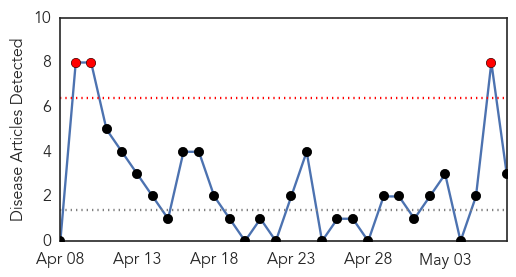
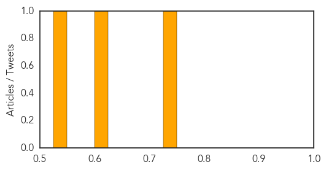

Hepatitis
30-Day Web Trend
3 alerts, 0 warnings

30-Day Twitter Trend
0 alerts, 0 warnings

Article Locations

Article Confidences
Top Articles:
Top Tweets:
-
No tweets found for May 07, 2014
Influenza
30-Day Web Trend
4 alerts, 5 warnings

30-Day Twitter Trend
2 alerts, 0 warnings

Article Locations
Article Confidences

Top Articles:
- 0.999
- Farwaniya hospital takes MERS precautions - Masks distributed to patients - Kuwait Times
- 0.997
- Risk low for outbreaks of human H5N6 cases
- 0.962
- Live avian influenza virus discovered in Antarctica Adélie penguins — MercoPress
- 0.918
- Waikato 'flu jabs' rates looking promising
- 0.913
- Avian Flu Discovered in Penguins in Antarctica
- 0.905
- Pneumonia: Children’s Silent Killer on the Prowl, Articles
- 0.719
- Johns Hopkins gets NIH grant to innovate flu tracking
- 0.673
- Dr. Priya Tonseker Performing All-On-4 Surgery for NJ Dental Implants Concerned About the Link between Oral Health and General Health
Top Tweets:
-
No tweets found for May 07, 2014